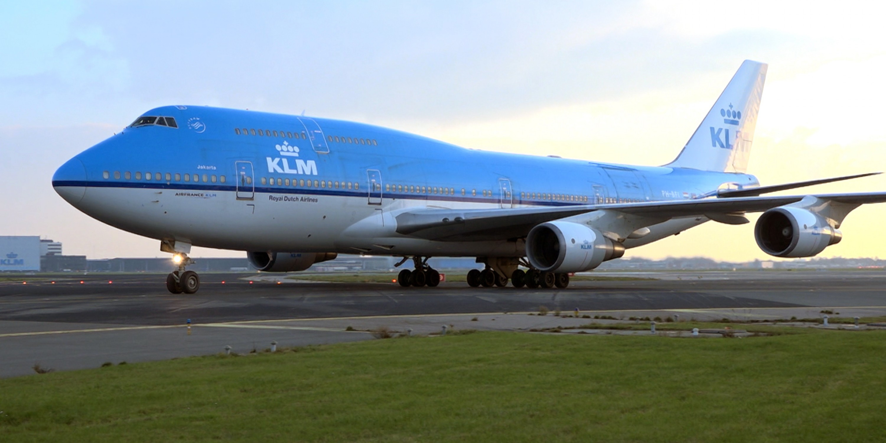
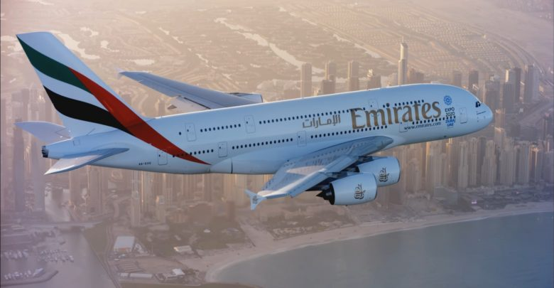
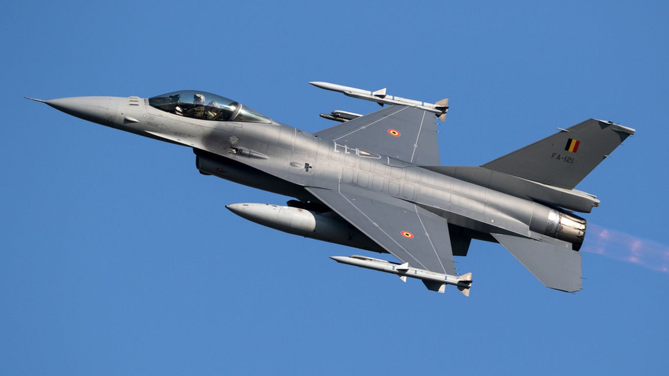

Boeing 737
Deze passagiersvliegtuig werd al ontworpen in november 1964 en was klaar voor gebruik in 1967. Dit is de meest bekende verkochte vliegtuig, er zijn ruim 10.000 van deze toestellen verkocht. Vooral Ryanair en Transavia gebruiken de Boeing 737. De vliegtuig heeft 100 tot 300 stoelen en een vliegbereik tussen 1100 tot 2200.
Boeing 747
De Boeing 747 wordt ook wel Jumbojet genoemd. De toestel heeft vier motoren en heeft aan de voorkant een dubbeldekker. De vliegtuig werd in 1970 voor het eerst gevlogen. Vanaf dat jaar tot 2007 was deze toestel de grootste van de wereld. Van deze vliegtuig werd er 1.542 van verkocht. Naast dat het een passagiersvliegtuig was, werd de Boeing ook gebruikt voor cargo.
Airbus A380
De Airbus A380 is tot nu de grootste passagiersvliegtuig op aarde. Het toestel heeft twee verdiepingen, vier motoren en er is plaats voor 853 passagiers. De lengte van de vliegtuig is 72,2 m , de toestel is 24,09 m hoog en heeft en spanwijdte van 79,75 m. Op 25 oktober 2007 werd het vliegtuig gebruikt. Er werd zo’n 8,8 miljard euro stopt in dit project om het te bouwen.
Straaljager
Een straaljager is een jachtvliegtuig met één of meerdere straalmotoren. De eerste gebruik van de straaljager was tijdens de Tweede Wereldoorlog. Je hebt veel verschillende soorten straaljagers zoals: Messerschmitt Me 262, Dassault Rafale, Eurofighter Typhoon, F-16 Tomcat en F-35 Lightning II.

Bronnen